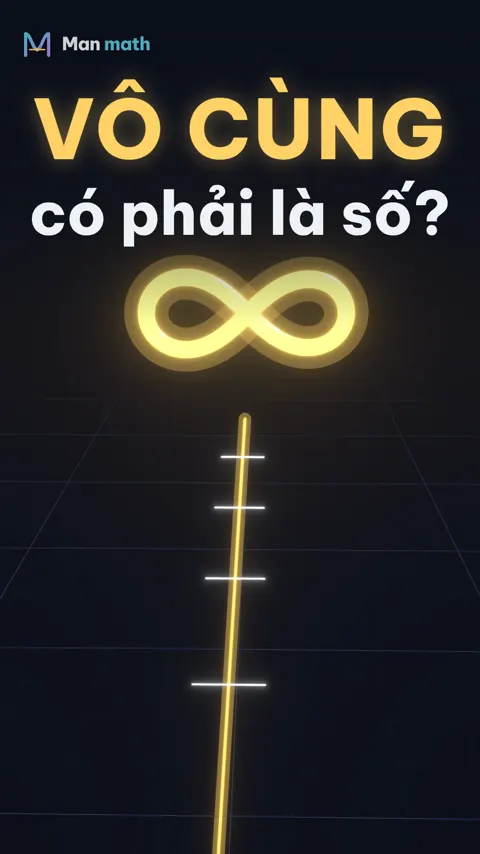
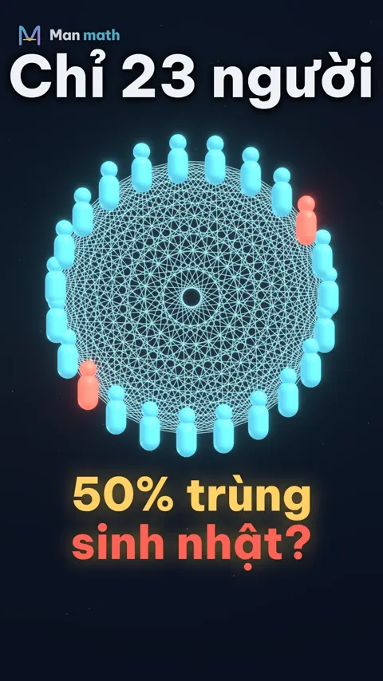
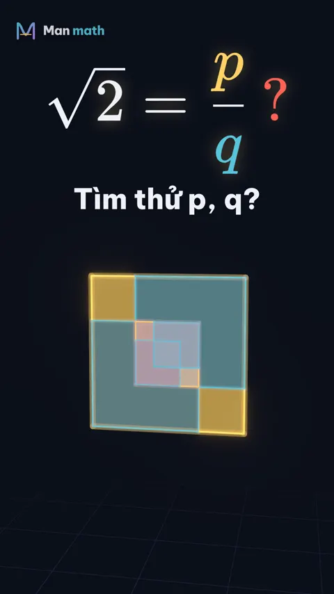
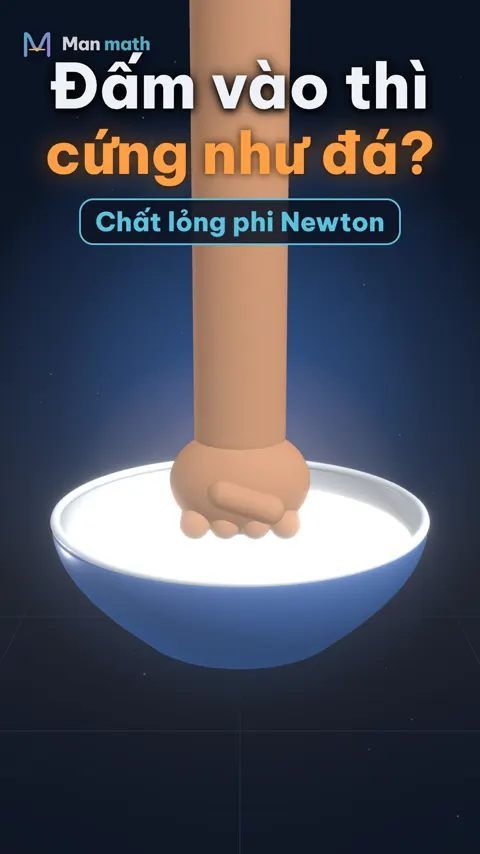
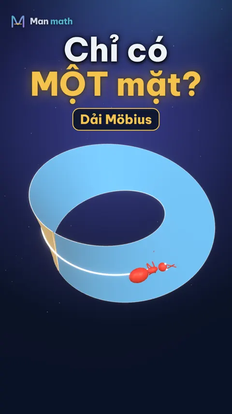

Visual STEM · 9:16 · 90–120 giây
Man Math
Giải thích Toán, Lý, Hoá, Sinh bằng hình 3D. Mỗi video mở bằng một hook meme trong 1–2 giây đầu, rồi đặt câu hỏi khiến người xem muốn biết đáp án.
- Dựng 3D bằng React Three Fiber
- Hook meme mở đầu
- Ảnh bìa: 1 câu hỏi + 1 hình chính
- Giọng đọc AI tiếng Việt
1.419
Vì sao natri nổ tung khi gặp nước?

1.332
1.317
1.294
1.263
1.23940video đã đăng
36.249lượt xem YouTube
36/40video vượt 300 lượt
1.028lượt xem trung vị mỗi video